Thank you for purchasing my plugin. If you have any questions that are beyond the scope of this help file, please feel free to email me via my user page contact form here. Thanks so much!
Taxonomies Filter Widget creates a widget that acts as a filter for your WordPress categories, tags and taxonomies. Visitors will be able to do faceted searches on your site and filter posts using drop-downs, checkboxes and radio buttons. While built especially for sites with a variety of categories, custom taxonomies and custom posts (eg: shops, directories, tutorials, job boards or listings), this plugin will also do a great job at filtering the standard WordPress posts by categories, tags and even post format.
In the ZIP file that you downloaded from Codecanyon, you will see a directory called twf_wordpress_plugin. Inside this directory is a ZIP file called taxonomies-filter-widget.zip which is the actual WordPress plugin. Now you can either:
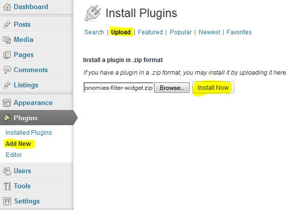
Regardless of the installation method you used, after you have activated the plugin, please click on the "Widgets" link under the "Appearance" tab. There, you will see a new Widget available for you, called Taxonomies Filter. This is how it should look like:
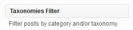
Now drag the Taxonomies Filter widget inside the widgetized area you want it displayed (eg: Sidebar).
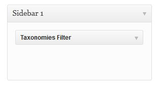
The last step is to click the down arrow handle in order to customize your widget. Please see the next section for the available options.
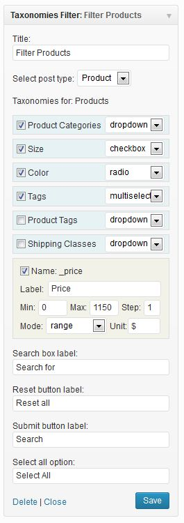
This is an example of the widget's backend interface. If you want to see it live, i have set up a demonstration website here.
Title: This is where you set the widget's title.This title will be displayed on your website.
Select Post Type: From this dropdown you can select which post type you want to be filtered. When you switch from one post type to another, you will still have the previous selected taxonomies available but i suggest you use only taxonomies specific to that post type.
Taxonomies for: This is a list with all the available taxonomies registered on your website. Besides the built in ones (like: Categories, Tags, Post Format), this list will also include all the custom taxonomies that you have registered for both regular and custom posts. Updates any time you change the post type.
Custom fields: This is a list with all the available custom fields registered on your website, for the post type you selected. This list will be populated only with the custom fields that have numeric values, because the filter will use the values to display posts that are between the minimum and maximum value set the by the user.
Suggestion: When you have custom posts, build your filters using only taxonomies registered for that specific custom post type. You can build as many widgets as you like, for each custom post that you have.
Assuming that you have followed the installation steps, now you are ready to set up your first filter. If you have followed all the steps and you still don't see the widget added to your WordPress blog, please feel free to email me via my user page contact form here or by using the email specified on this help file.
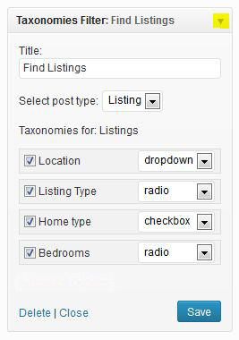
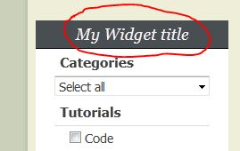
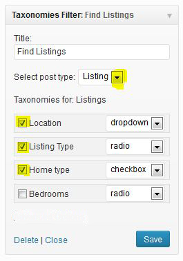
Whenever you add a new custom taxonomy to your blog, this list will be automatically updated. There is nothing extra that you need to do.
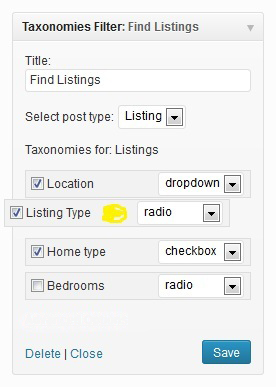
For each taxonomy you have 3 available options:
This option will set the way that specific option will be displayed on blog.
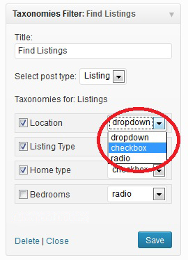
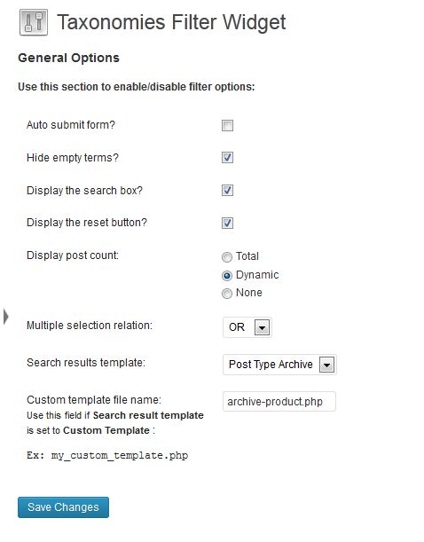
Default: Unchecked.
Default: Unchecked.
Default: Unchecked.
Default: Unchecked.
Default: Dynamic.
This option will alter how the filter behaves when someone selects multiple checkboxes. This is how it works:
Let's imagine we have a website with recipes, and someone is searching for a salad. We currently have 3 salad recipes available.
Now the user selects from a lists of ingredients: salad leaves and cucumber then clicks submit. He will receive:
I'm using two CSS files in this plugin located inside the /css folder. The first one (admin.css) is used for the admin page only while the second one (widget.css), adds some basic display rules for the widget on the front end.
This file sets some basic rules for the widget's admin interface. You don't need to modify this file unless you want them to be displayed in a different way.
- /* This stylesheet is used to style the admin option form of the widget. */
- .taxonomies-admin-list li{
- border: 1px solid #DDDDDD;
- clear: both;
- cursor: move;
- line-height: 2.1em;
- overflow: hidden;
- padding: 0 5px;
- }
- .taxonomies-admin-list li select{
- float:right;
- }
- .taxonomies-admin-list li input[type="checkbox"],
- .taxonomies-admin-list li input[type="radio"],
- #taxonomies-filter-advanced input[type="checkbox"],
- #taxonomies-filter-advanced input[type="radio"]{
- margin: 0;
- }
- .taxonomies-admin-list .tfw_taxonomy{
- background-color: #E7F2F5;
- }
- .taxonomies-admin-list .tfw_cf_li{
- padding: 5px 10px;
- background-color: #F2F2E9;
- }
- .taxonomies-admin-list .tfw_cf_li label{
- width:25px;
- }
- .taxonomies-admin-list .tfw_cf_label{
- float: right;
- width: 80%;
- }
- .taxonomies-admin-list .tfw_cf_mode{
- float: none;
- width: 43%;
- }
- .taxonomies-admin-list .tfw_cf_unit{
- float: none;
- width: 23%;
- }
- .taxonomies-admin-list .tfw_cf_min_max{
- width: 42px;
- }
- .taxonomies-admin-list .tfw_cf_step{
- width: 24px;
- }
This is the stylesheet responsable for how the widget displays on you blog. The CSS options set here are just to make sure the labels, dropdowns, checkboxes, radio buttons and input elements display correctly.
The stylesheet does not apply any colors, borders or fixed width (except the size of the Ajax loading image). This way, the widget will obey the CSS rules applied by your theme and it will nicely blend in.
- /* This stylesheet is used to style the public view of the widget. */
- .taxonomies-filter-widget{
- clear: both;
- }
- .taxonomies-filter-widget-form{
- max-width: 100%;
- padding: 0 0.5em 1em;
- overflow: hidden;
- }
- .taxonomies-filter-widget-form label.taxlabel{
- font-size: 1.1em;
- font-weight: bold;
- line-height: 2em;
- padding: 0 0.5em;
- }
- .taxonomies-filter-widget-form select,
- .taxonomies-filter-widget-form .input_search{
- width:100%;
- }
- .taxonomies-filter-widget-form .input_cf{
- width:25%;
- }
- .taxonomies-filter-widget-form input[type="text"]{
- -webkit-box-sizing: border-box;
- -moz-box-sizing: border-box;
- box-sizing: border-box;
- }
- .taxonomies-filter-widget-form button,
- .taxonomies-filter-widget-form input,
- .taxonomies-filter-widget-form select{
- font-size: 100%;
- margin: 0 0 0.3em;
- vertical-align: baseline;
- }
- .taxonomies-filter-widget-form ul {
- margin: 0;
- }
- .taxonomies-filter-widget-form ul ul{
- margin-bottom: 0;
- margin-left: 1.2em;
- }
- .taxonomies-filter-widget-form li{
- list-style: none;
- }
- .taxonomies-filter-widget-form input[type="submit"]{
- margin:0.3em 0 0 0;
- float:right;
- }
- .taxonomies-filter-widget-form .loading_img{
- width:43px;
- height:11px;
- background-image: url('ajax-loader.gif');
- display:block;
- margin:7px auto 8px;
- overflow: hidden;
- }
- .taxonomies-filter-widget-form .reset_button{
- display: block;
- float: left;
- padding: 0.5em;
- }
- .taxonomies-filter-widget-form li span{
- zoom: 1;
- filter: alpha(opacity=60);
- opacity: 0.6;
- font-size: 0.9em;
- }
Let's imagine that you wish to change the color of the labels displayed on the website.
For that, click on the Editor link under the Plugins panel. Now, on the right side, there's a dropdown with all the plugins installed on your blog. Please choose "Taxonomies Filter Widget" and then click on the "taxonomies-filter-widget/css/widget.css" link displayed beneath. After doing that, this is what you should see:
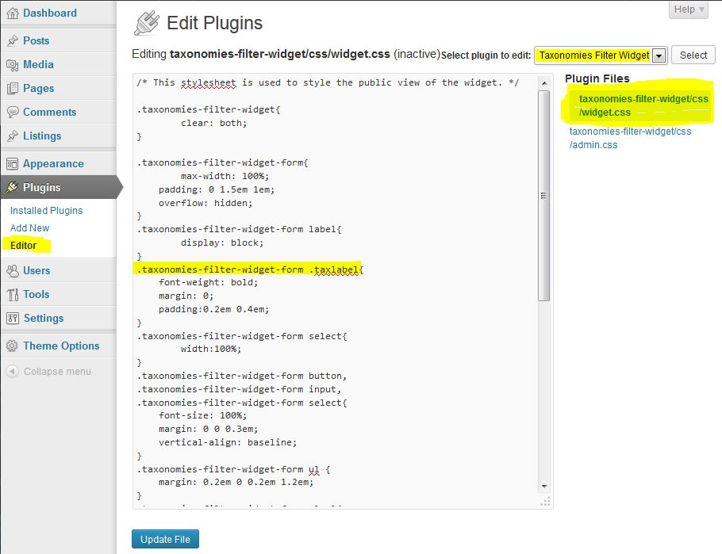
Note: As a general rule, before modifying any files in your WordPress installation, please make a backup of that file, just in case something goes wrong. Also, for PHP files, if you modify them using this procedure (not recommended), besides the backup, please disable the plugin before modifying it.
Inside that window, find the .taxonomies-filter-widget-form .taxlabel (highlighted with yellow in the image). By default it should look like that:
.taxonomies-filter-widget-form .taxlabel{
font-weight: bold;
margin: 0;
padding:0.2em 0.4em;
}
Replace it with:
.taxonomies-filter-widget-form .taxlabel{
font-weight: bold;
margin: 0;
padding:0.2em 0.4em;
color: red;
}
Notice the color:red; added? By using that, from now on, all the labels will be red.
Make sure that you press the "Update file" button for changes to take effect.
There are 2 separate files inside the /js folder. First one, (admin.js), is used in the admin panel for ordering and to toggle the advanced options pane while the second one, (widget.js), is used to handle functions like the drill down for dropdowns on the front end.
Both JS files depend on jQuery and are enqued accordingly
- (function ($) {
- "use strict";
- $(function () {
- // update the list with available taxonomies whenever you change the post type
- $('.widget-liquid-right').on('change', '.tfw_post_type', function(){
- var widget = $(this).closest('div.widget');
- wpWidgets.save(widget, 0, 1, 0);
- });
- // make the taxonomies lis sortable
- $('.widget-liquid-right').on('mouseenter', 'ul.taxonomies-admin-list', function() {
- $(this).sortable();
- });
- });
- }(jQuery));
- (function ($) {
- "use strict";
- $(function () {
- var twfForm = $(".taxonomies-filter-widget-form");
- var twfFormAjax = $(".tfw_auto");
- // Handle Ajax DrillDowns
- twfForm.on('change','.tax-with-childrens', function(e) {
- e.preventDefault();
- var myForm = $(this).closest("form");
- var tax = $(this).attr('id');
- var term = $(this).val();
- var current_selection = $(this);
- var ajaxLoader = '<div class="loading_img"></div>';
- $(this).after(ajaxLoader);
- $.ajax
- (
- {
- type: "POST",
- url: ajax_object.ajax_url,
- data: {
- action: 'get_term_childrens',
- taxonomy: tax,
- term: term
- },
- success:function(results)
- {
- if (results){
- $(current_selection).nextAll("#sub_cat_" + tax + ", .loading_img").remove();
- $(current_selection).after(results);
- if (myForm.hasClass("tfw_auto")) { myForm.submit(); };
- } else {
- $(current_selection).nextAll("#sub_cat_" + tax + ", .loading_img").remove();
- if (myForm.hasClass("tfw_auto")) { myForm.submit(); };
- }
- }
- }
- );
- });
- // Select Multiple
- $('.taxonomies-filter-widget-form select[multiple]').change(function() {
- var values = $(this).closest('li').find("select[multiple] option:selected").map(function () { return this.value; }).get().join(ajax_object.relation);
- $(this).closest('li').find("input[type=hidden]").val(values);
- });
- // Multiple Checkboxes
- $('.taxonomies-filter-widget-form input:checkbox').change(function() {
- var values = $(this).closest('ul.checkboxes_list').find("input:checked").map(function () { return this.value; }).get().join(ajax_object.relation);
- $(this).closest('ul.checkboxes_list').find("input[type=hidden]").val(values);
- });
- // Auto submit
- twfFormAjax.on('change', ".noUiSlider, input, select:not(.tax-with-childrens)", function() {
- $(this).closest('form').submit();
- })
- // Clear the url from empty elements
- twfForm.on('submit', function() {
- $(this).find('input:not([name=s], [type=hidden], .input_cf), select').each(function() {
- if (this.value == '0' || this.value == '') {
- $(this).prop("disabled", true);
- }
- });
- });
- // Enable all previously disabled elements
- twfForm.find('input[type=text], select').each(function() {
- $(this).prop("disabled", false);
- });
- });
- }(jQuery));
This plugin has 3 PHP files responsable for creating the widget, displaying the admin panel and for displaying the widget on your blog. These files are:
This file is located in the root of the "taxonomies-filter-widget" folder. This is the main file that holds the php Class responsable with the creation and registration of the widget.
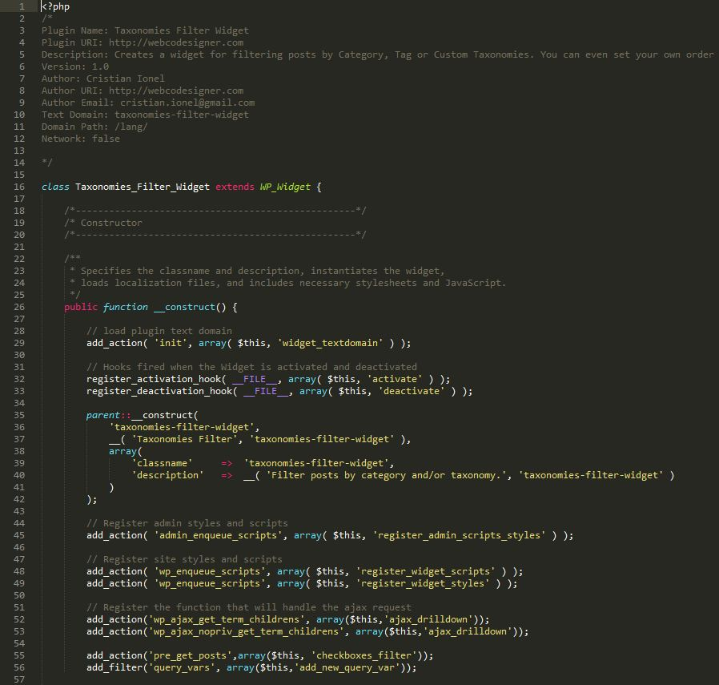
Please do not modify this file, unless you are familiar with PHP and you know what your doing.
To separate business logic from presentation logic, the next two files are included in the main plugin.php file when required.
This file is located inside the /views folder and it is used to markup the administration form of the widget.
This file is located inside the /views folder and it is used to markup the public-facing widget.
This plugin uses only one image "css/ajax-loader.gif" which has been generated with http://www.ajaxload.info/ (it is stated at the bottom of the website that "Generated gifs are totally free for use"). For the range slider, this plugin uses noUiSlider jQuery slider (jquery.nouislider.min.js and nouislider.fox.css) which is free to use in commercial projects. No other images or sounds are provided with this plugin. The PHP code used to create the plugin has been written by following the standards set by the WordPress Codex. The plugin is written in OOP PHP, using the Widgets API
Once again, thank you so much for purchasing this plugin. As I said at the beginning, I'd be glad to help you if you have any questions relating to this plugin. No guarantees, but I'll do my best to assist. If you have a more general question relating to the plugins on Codecanyon, you might consider visiting the forums and asking your question in the "Item Discussion" section.
Cristian Ionel